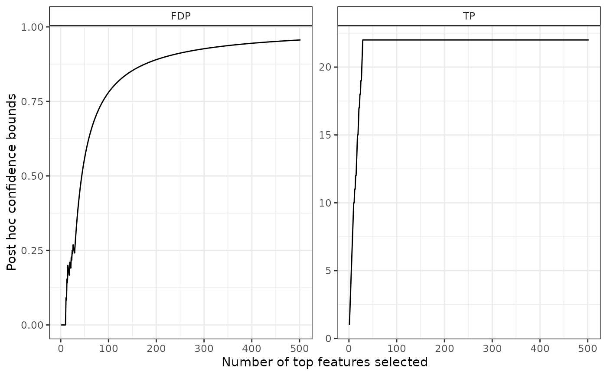
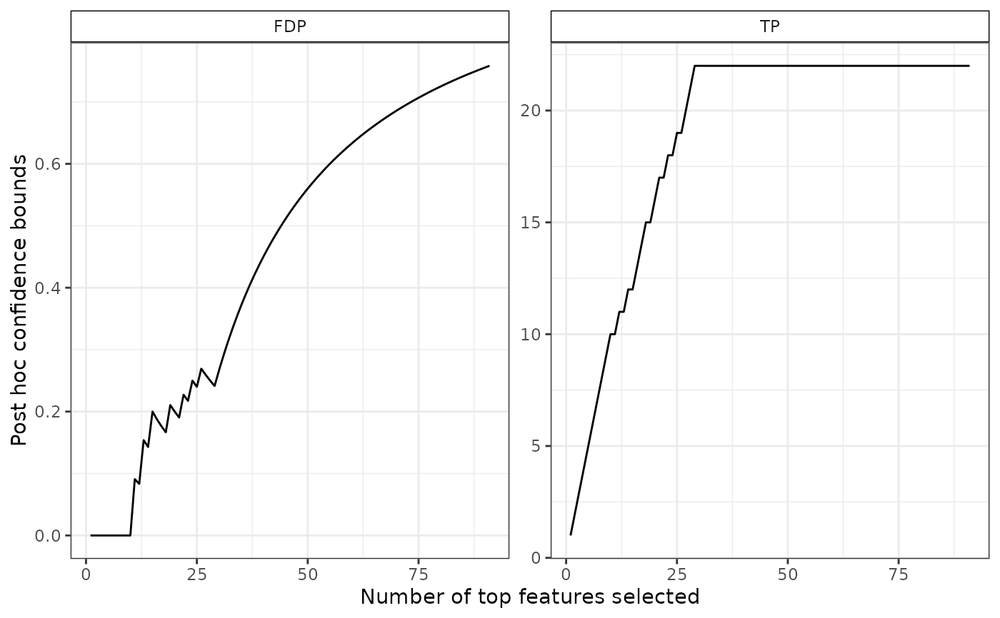

Fit SansSouci object
Arguments
- object
An object of class
SansSouci- alpha
A numeric value in
[0,1], the target (JER) risk- B
An integer value, the number of permutations to be performed. Defaults to 1000
- rowTestFUN
A (vectorized) test function. Defaults to rowWelchTests.
- alternative
A character string specifying the alternative hypothesis. Must be one of "two.sided" (default), "greater" or "less".
- family
A character value, the name of a threshold family. Should be one of "Linear", "Beta" and "Simes", or "Oracle". "Linear" and "Simes" families are identical.
Simes/Linear: The classical family of thresholds introduced by Simes (1986). This family yields JER control if the test statistics are positively dependent (PRDS) under H0.
Beta: A family of thresholds that achieves marginal kFWER control under independence
Oracle A family such that the associated bounds correspond to the true numbers/proportions of true/false positives. "truth" must be available in object$input$truth.
- max_steps_down
A numeric value, the maximum number of steps down to perform. Defaults to 10 (but the algorithm generally converges in 1 or 2 steps).
- K
An integer value in
[1,m], the number of elements in the reference family. Defaults to m- force
A boolean value: should the permutation p-values and pivotal statistics be re-calculated ? Defaults to
FALSE- verbose
A boolean value: should extra info be printed? Defaults to
FALSE- ...
Not used
Examples
# Generate Gaussian data and perform multiple tests
obj <- SansSouciSim(m = 502, rho = 0.5, n = 100, pi0 = 0.8, SNR = 3, prob = 0.5)
res <- fit(obj, B = 100, alpha = 0.1)
# confidence curve
plot(res)

# confidence curve for a subset
S <- which(pValues(res) < 0.1 & foldChanges(res) > 0.3)
plot(res, S = S)

# plot two confidence curves
res_beta <- fit(res, B = 100, alpha = 0.1, family = "Beta", K = 20)
resList <- list("Linear" = res, "Beta" = res_beta)
bounds <- lapply(resList, predict, all = TRUE)
plotConfCurve(bounds, xmax = 200)